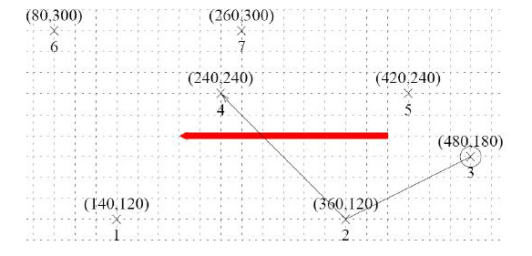

Home Page
F.A.Qs
Statistical Charts
Past Contests
Scheduled Contests
Award Contest
| Online Judge | Problem Set | Authors | Online Contests | User | ||||||
|---|---|---|---|---|---|---|---|---|---|---|
| Web Board Home Page F.A.Qs Statistical Charts | Current Contest Past Contests Scheduled Contests Award Contest | |||||||||
|
Language: Rick the Persistent Gnu
Description A gnu is an African antelope that looks like an ox. Rick the persistent gnu is the leading bull of a herd of gnus. During the dry seasons, he leads his herd towards a greener pasture called Fair Sight (FS). On his way towards FS, Rick has to make many stops at small intermediate feeding sites to get his herd refreshed.
Researchers at the Migration Investigation Team (MIT) found that gnus cannot travel further than D units of distance between two sites. They also observe that Rick is very persistent and serious about following the right direction. He always travels in straight lines, making stops and possibly changing directions only at a feeding site. He never leads the herd in any direction that points away from FS - the worst he would ever do is following a direction perpendicular to FS. In fact, he always chooses, among all possible sites, the one pointing in the direction closest to that of FS. Possibly in order to reduce the herds confusion, however, Rich excludes from consideration sites that would make the change of directions more abrupt than a right angle (i.e., deviating from the previous traveling segment by more than 90 degrees), even if they might be in the direction closer to that of FS than other feasible sites are. Given the map of the possible feeding sites, the direction of Fair Sight, and the starting point of the gnu herd, you will help the Migration Investigation Team forecast the path of the herd as far as the map allows. Consider the example above, where Rick starts from site 3 and D is 170.0. The big arrow points in the direction of FS. From site 3, sites 2 and 5 are the only two sites within the distance of D. He proceeds to site 2 since the direction of site 2 as seen from site 3 is more in line with FS than site 5. From site 2, he does not travel to site 5 since it is at a direction pointing away from FS. He then proceeds to site 4, the only possible next step. Now site 1 becomes within reach and seems somewhat in line with FS. It is excluded from consideration however, since it requires taking a very sharp turn, more than 90 degrees counterclockwise. Going towards site 7 would not make a very sharp turn but it leads away from FS. Site 7 is out of reach. So the path stops here. Input The input consists of several test cases.
Each test case begins with a line of 5 numbers - the direction of FS as a vector (Fx, Fy), the number N, 1 <= N <= 100 of all sites on the map, the starting site number S, 1 <= S <= N where the herd enters this map, and a real number D the limit of trip distance between adjacent sites.Each of the next N lines consists of a pair of real numbers x and y representing the coordinates of the intermediate feeding sites. The last test case is followed by a line consisting of 5 zeros. Each of the real numbers (including FS's components and D) has 1 digit after the decimal point and is within the range -999999 <= x, y <= 999999. The input has been checked against relevant degenerate cases. That is, you can be sure that deciding whether a turn is less than or greater than 90 degrees will never give an answer extremely close to 90 degrees, provided that all computations are done in at least single precision arithmetics. Ditto for other tests. Output Print the result of each test case on one line. For each test case, print the site numbers of all the visited sites along the migration path, in order and separated by a blank. Your output will always contain at least one site, namely the starting site.
Sample Input -100.0 0.0 7 3 170.0 140.0 120.0 360.0 120.0 480.0 180.0 240.0 240.0 420.0 240.0 80.0 300.0 260.0 300.0 0 0 0 0 0 Sample Output 3 2 4 Source |
[Submit] [Go Back] [Status] [Discuss]
All Rights Reserved 2003-2013 Ying Fuchen,Xu Pengcheng,Xie Di
Any problem, Please Contact Administrator